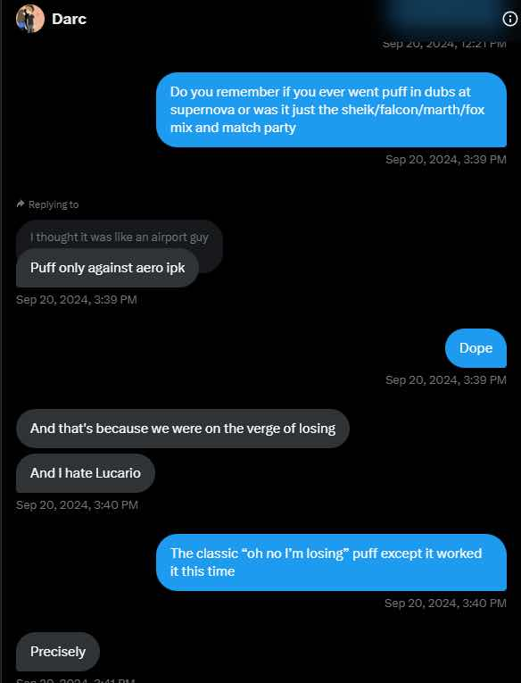

Serb
Throughout Project M’s history, there have been many prominent doubles players and teams, from the dynamic team synergy of DVD and Envy to the sheer dominance of the divide and conquer strategy employed by Sosa and Malachi. One player, especially in the late 3.6 era, found himself slowly becoming a doubles specialist despite still turning in modest, or even strong, singles results. That player is Dustin “Darc” Hayes, and he turned in one of the most unique doubles runs in Project M history. This is the story of the Supernova doubles champions.
Before we dive into the tournament itself, it’s important to cover Darc’s extensive history as a smasher. Once upon a time, Darc was a well regarded melee Jigglypuff from Maine who spent the first year of his competitive career, 2006, mostly relegated to Maine or small new england brackets. As early as 2007, however, he began traveling for tournaments, including a singles run to 9th place at Cataclysm 3, an event featuring M2K, PC Chris, KDJ and other heavy hitters from that era. These early days of the melee meta is also where Darc fell in love with doubles. At first he entered events primarily with his brother Dazwa from 2006-2008, but soon found himself traveling solo to major events and teaming with legends like Hungrybox, Mang0, Kage, and most notably Scar- a team that famously placed 2nd at the first Genesis. Darc continued entering melee events off and on all the way through 2019, but his Project M career began around 2014 alongside KDJ who had also begun playing the game locally.
Like melee, Darc excelled at singles, getting 2nd at Blacklisted 1 and We Tech Those 3 in the preceding months with wins on Phresh, Seagull Joe, Reslived Frozen twice, and Jaden, but doubles remained his first love. He never placed outside the top 8 at any major event he took seriously, and saw great success teaming with Silver, as arguably one of Project M’s top 10 best static teams ever. However, among the many top 3 finishes Darc had in his doubles career, Supernova remains the most incredible by far.
Supernova was a Project M exclusive event held in New York City in April 2016, featuring almost all of the top east coast talent, as well a handful of top tier west coast invaders, making it one of the most competitive Project M tournaments of its time. The day before the tournament, however, Darc was not in New York City, or New England, or even the United States. Darc was on a well-deserved vacation in Mexico.
Flying back from Mexico to NYC, at midnight the night before one of the biggest majors of the year would already be an impressive footnote on his run regardless of placement, but that’s just the beginning. The day of his flight home from Mexico Darc got lasik eye surgery, which requires your eyes to be bandaged for 12-24 hours and requires protective glasses for several days. The symptoms can include blurred vision, light sensitivity, and dryness when looking at screens for too long…all of which would typically make playing a video game in a dark basement with bright CRT Televisions glowing quite difficult. This man traveled to the airport and navigated to his flight without the use of his eyes in any capacity, as they were still fully bandaged. Once on the plane, one of the other passengers on the flight noticed his bandages and the two struck up a conversation about Darc’s bandaged eyes and funny glasses, and 6 hours later, that passenger helped him navigate off the plane, through JFK, and into a taxi which brought him to the Nebulous venue in downtown NYC at 1am where his carpool was waiting.
7 hours later, after some restless sleep, Darc awoke, removed the bandages, blinked a few times, and then nonchalantly said “cool I can see”. He put on his prescription protective sunglasses, got into the car, and rode to the venue seemingly ready to play.
Now, a blind midnight international trip into dominating doubles would already be impressive, but the second intriguing aspect of Darc’s supernova story is the composition of his team. Instead of teaming with Massachusetts’ mainstays like Twisty or his static teammate Silver, Darc teamed with a former top 100 melee player who had almost no experience with Project M. This player, who will remain nameless due to his current banned status in the melee community, had only played the game a few times, and before each set would ask Darc what the other characters on the screen did. With Darc’s guidance, the two would mix and match different melee characters with Darc playing Sheik, Marth, Fox, Captain Falcon and occasionally Jigglypuff while his partner went mostly Sheik, Fox, or Captain Falcon.
These two tore through Phresh/Zork and Capi/E2XD in the early phases before reaching the meat of the bracket. The first significant challenge they had to overcome was Junebug and Seagull Joe who were the top team out of MDVA at the time and Junebug himself had a strong case as the number one player in the world. Darc’s team began the set going double Sheik, a team composition relied on as a safety net due to Sheik’s strong team combo routes, relatively simple execution threshold and gameplan, and straightforward edgeguard trees. These strengths were all magnified against Junebug and Seagull Joe who were going double Diddy and simply could not get kills fast enough to halt Darc’s momentum at any point in the set. A swift 2-0 saw Darc move on in bracket.
Next they faced off against Machiavellli and Frozen, who were both ranked number 2 in their highly competitive regions of Socal and New York respectively. Darc used Falcon for the entirety of this set, taking early kills with well placed Knees while his teammate stock tanked, and this strategy proved very dominant, as the entire set was over in less than 10 minutes. Darc was able to dominate the set from the first “Go!”, flying around the battlefield taking stocks on the floaty team in front of them. Despite their individual prowess, the Frozen/Machiavelli team was unable to slow down Darc’s team at all and another 2-0 was logged into Challonge.
IPK and Aero may have been Darc’s most unique challenge of the entire bracket and first real threat up to this point. IPK and Aero were a well decorated team of the era, and were both strong individual players as well. The most important factor, however, was IPK’s character choice: Lucario. To this day Darc considers Lucario one of his weakest individual matchups, and here he was, matched up against the best Lucario in PM, in doubles, with a teammate who had never heard of the character.
Game 1 saw a continued attempt at Double Sheik to fundies their way through bracket, but this time, it would not be enough. They pretty convincingly lost game 1, so for game 2 in an effort to provide more reliable early kill potential for the team, Darc switched to Falcon, a character he had beaten Frozen’s Lucario with at Blacklisted 1 and some would consider his true main at the time.This, however, also failed miserably. Down 0-2, Darc needed to find an answer quickly, and he fell back on old faithful, a character reserved almost exclusively for hail mary attempts in matchups he can’t find any other answer for. He reached into the back of the vault, and switched to his tried and true melee main from nearly 10 years prior: Jigglypuff. The new character, combined with a dreamland counterpick, some sloppy play from IPK and Aero, and a backwards facing peanut toss into rest read. Darc was on the board. Down 1-2, with dreamland off the board, Darc still had a sizable hole to climb out of. The end of game 4 saw Darc’s teammate lose his stocks first, leaving Darc to play out a 2v1 by himself, with IPK at near 0%. Cleaning up Aero’s stock quickly left IPK and Darc in a tense 1v1 between Jigglypuff and his mortal enemy in Lucario. A few neutral wins and a perfectly played methodical edgeguard later, the foursome found themselves going to game 5. Perhaps due to the momentum from a phenomenal game 4 or growing confidence from Darc’s team following an impressive game 4 ending, game 5 looked a little more dominant from Darc’s team and they were able to close it out, capping a fantastic comeback and moving onto Winner’s side of Grand Finals.
Grand Finals would see Darc go up against Emukiller and Switch, both NYNJ powerhouses and considered among the best of their respective characters. Game 1 saw Darc return to double sheik, which once again failed, before he returned to Puff for games 2 and 3. Despite some impressive team saves and early edgeguards, they were only able to split these games resulting in a score of 2-1 for EmuKiller and Switch. For the third time in the set, we see Darc switch characters, switching to Fox, while his teammate continued to play Sheik, and for the third time in the set, we see Darc lose, resulting in a bracket reset. The two teammates have a short discussion between sets, and they make yet another switch to a new unique combination of character choices that hadn’t been seen yet in bracket: Double Fox, in Grand Finals! Set 2 was a bit more dominant for Darc’s team, as they were able to win game 1, and only lost game 2 when Darc’s teammate had an unfamiliar 1v1 last stock situation against one of the best players in the world, Emukiller. Using strong fundamental doubles strategies and a dominant control of center stage, games 3 and 4 were tight the whole way through, but Darc’s team came out on top following a tight 2v1 ending between his teammate and Switch/Emukiller on Green Hill that he was able to clutch out. After a 9 game finals, Darc was finally declared the inaugural king of Supernova doubles.
Darc would continue entering and succeeding in doubles, and his singles performances would land him 16th on the first official PMRank at the end of 2016, but the unprecedented run at Supernova may be his crowning accomplishment. Between the chaos and near insanity of the days leading up to the tournament, and the actual bracket run with a melee player at his side, the story of the Supernova doubles champions is one for the history books.